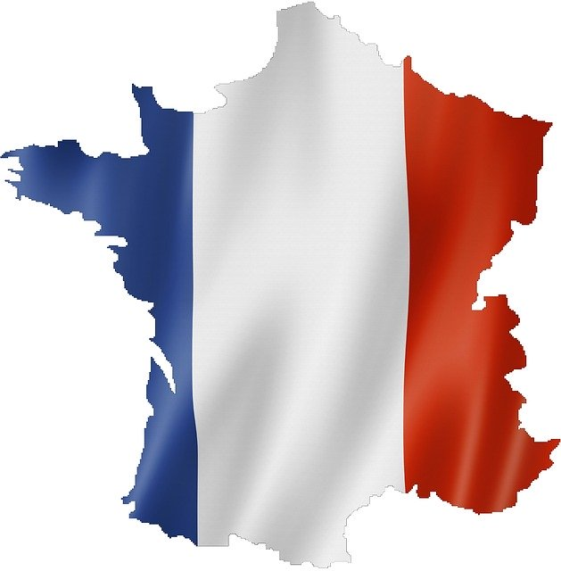
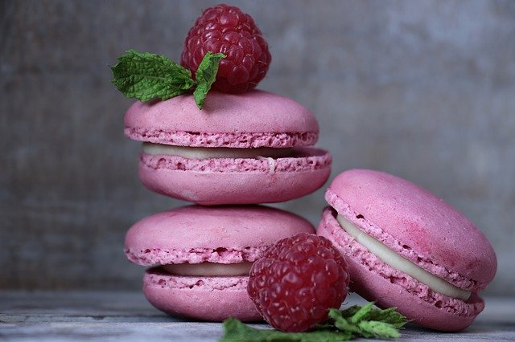
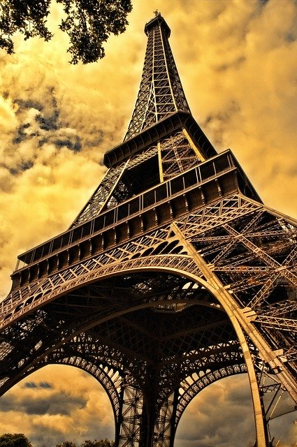
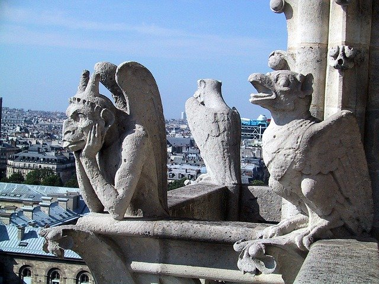

La France

Etymologie
Le pays tient son nom du peuple des "Francs", ce qui signifie "hommes libres". Les terres de ce futur pays faisaient à l'origine parti de l'Empire Romain dans l'Antiquité. A l'époque, il s'agissait du royaume de "Gaule", qui s'étendait au-délà des frontières actuelles de la France. La capitale de ce territoire était Lugdunum, l'ancien nom de Lyon.
Gastronomie
Les macarons sont des petits gâteaux qui existent depuis le Moyen-Age. Dérivés de la meringue, ils étaient parfumés à l'amande, et avaient une consistence moelleuse et granuleuse à la fois. Il était à cette époque répandu dans toute l'Europe. Les pâtisseries françaises se développent partout dans le pays à partir du XVIIIème siècle et le macaron commence à évoluer : la croûte de macaron reste dure tandis que l'intérieur devient fondant. Ensuite, on commence à garnir l'intérieur de ces biscuits avec de la confiture, des épices ou de la liqueur, puis on les colle deux à deux.
Le macaron que l'on connaît aujourd'hui est le macaron parisien, apparu au XIXe siècle : on met alors entre les deux croûtes du macaron un coeur de crème au beurre, de confiture ou de compote. C'est alors que l'on commence à colorer leur croûte, pour indiquer le parfum du macaron.

A voir
La Tour Eiffel est le monument emblématique de Paris et de la France. Mesurant 312 mètres de haut à l'origine, elle fût construite par Gustave Eiffel pour l'Exposition universelle de 1889, et son premier nom était "tour de 300 mètres". Elle resta pendant 40 ans le monument le plus haut du monde. La plus haute plateforme d'observation que propose la tour, située tout en haut du 3ème étage, est la plus haute de l'Union Européenne (encore aujourd'hui).
L'idée d'une tour émergea aux Etats-Unis lors des précédentes Expositions. Mais elle ne fût jamais réalisée, faute de financement. Eiffel reprend le projet, même si en réalité il n'a pas conçu le monument, mais a défendu et supervisé le projet. Elle connaît un succès immédiat lors de l'Exposition, succès qui retombe dès la fin de l'Exposition. Elle risque alors d'être démontée. Cependant, Eiffel donne l'idée qu'elle puisse servir pour la science, notamment pour la radio-difusion et la météologie. Cela lui redonne une nouvelle utilité, ce qui la sauva. Avec le développement dans les années 1960 du tourisme, elle est de plus en plus visitée, ce qui en fait aujourd'hui la "Dame de Fer" que l'on connaît.

Oeuvres
Notre-Dame de Paris est très connue pour ses nombreuses gargouilles, et elle a inspirée de nombreuses histoires. Peut-être le premier était Victor Hugo, qui a écrit un roman éponyme en 1831. L'intrigue se déroule en 1482 à Paris, et tout se déroule autour de la Cathédrale. Le roman est surtout connu pour ses personnages : Quasimodo, Esmeralda... Son succès fût immédiat à la sortie du roman, et c'est un succès toujours d'actualité, puisqu'il a inspiré tant une comédie musicale portant le même nom, qu'un film Disney.
